Performance Overview

Model Evaluation of Spatial Heuristics.
Can LLMs use internal visualisation or spatial reasoning to solve problems?
| Rank | Engine Name | Score | Percentage | Detailed Results |
|---|---|---|---|---|
| #1 | human-with-toolsBEST | 0.9732 | 97.3% | View Details → |
| #2 | gpt-5.2-HighReasoning | 0.5247 | 52.5% | View Details → |
| #3 | gemini-3-pro-preview-Reasoning-Tools | 0.3381 | 33.8% | View Details → |
| #4 | gpt-5-mini | 0.3127 | 31.3% | View Details → |
| #5 | gpt-5.2-chat-azure-Reasoning | 0.2138 | 21.4% | View Details → |
| #6 | qwen3-coder-next | 0.1503 | 15.0% | View Details → |
| #7 | gpt-5.1 | 0.0423 | 4.2% | View Details → |
| #8 | LLaVA-1.6-34B-HighReasoning | 0.0047 | 0.5% | View Details → |
| #9 | Qwen2.5-VL-3B-Instruct-HighReasoning | 0.0019 | 0.2% | View Details → |
| #10 | Qwen2-VL-2B-Instruct | 0.0012 | 0.1% | View Details → |
| #11 | LLaVA-1.6-Mistral-7B | 0.0009 | 0.1% | View Details → |
| #12 | LLaVA-1.6-34B | 0.0000 | 0.0% | View Details → |
| #13 | LLaVA-1.5-7B | 0.0000 | 0.0% | View Details → |
| #14 | LLaVA-1.5-7B-HighReasoning | 0.0000 | 0.0% | View Details → |
| #15 | LLaVA-1.5-13B | 0.0000 | 0.0% | View Details → |
| #16 | LLaVA-1.5-13B-HighReasoning | 0.0000 | 0.0% | View Details → |
| #17 | Llama3-LLaVA-Next-8B | 0.0000 | 0.0% | View Details → |
| #18 | Llama3-LLaVA-Next-8B-HighReasoning | 0.0000 | 0.0% | View Details → |
| #19 | Qwen2-VL-72B | 0.0000 | 0.0% | View Details → |
| #20 | Qwen2-VL-72B-HighReasoning | 0.0000 | 0.0% | View Details → |
| #21 | Mistral-Large-3-675B | 0.0000 | 0.0% | View Details → |
| #22 | Mistral-Large-3-675B-HighReasoning | 0.0000 | 0.0% | View Details → |
| #23 | deepseek-coder-33b-instruct | 0.0000 | 0.0% | View Details → |
| #24 | deepseek-r1-distill-llama-70b | 0.0000 | 0.0% | View Details → |
| #25 | deepseek-r1-distill-llama-70b-HighReasoning | 0.0000 | 0.0% | View Details → |
| #26 | deepseek-v2.5 | 0.0000 | 0.0% | View Details → |
| #27 | deepseek-v2.5-HighReasoning | 0.0000 | 0.0% | View Details → |
| #28 | internlm-s1 | 0.0000 | 0.0% | View Details → |
| #29 | internlm-s1-HighReasoning | 0.0000 | 0.0% | View Details → |
| #30 | Llama-4-Maverick-128E | 0.0000 | 0.0% | View Details → |
| #31 | Llama-4-Maverick-128E-HighReasoning | 0.0000 | 0.0% | View Details → |
| #32 | Qwen3-VL-235B-A22B-Thinking | 0.0000 | 0.0% | View Details → |
| #33 | Qwen3-VL-235B-A22B-Thinking-HighReasoning | 0.0000 | 0.0% | View Details → |
| #34 | deepseek-vl2 | 0.0000 | 0.0% | View Details → |
| #35 | deepseek-vl2-HighReasoning | 0.0000 | 0.0% | View Details → |
| #36 | deepseek-vl2-small | 0.0000 | 0.0% | View Details → |
| #37 | deepseek-vl2-small-HighReasoning | 0.0000 | 0.0% | View Details → |
| #38 | deepseek-ocr | 0.0000 | 0.0% | View Details → |
| #39 | deepseek-ocr-HighReasoning | 0.0000 | 0.0% | View Details → |
| #40 | MiniMax-VL-M2.1 | 0.0000 | 0.0% | View Details → |
| #41 | MiniMax-VL-M2.1-HighReasoning | 0.0000 | 0.0% | View Details → |
| #42 | ERNIE-4.5-VL-424B | 0.0000 | 0.0% | View Details → |
| #43 | ERNIE-4.5-VL-424B-HighReasoning | 0.0000 | 0.0% | View Details → |
| #44 | llama3-70b-bedrock-HighReasoning | 0.0000 | 0.0% | View Details → |
| #45 | LLaVA-1.6-Mistral-7B-HighReasoning | 0.0000 | 0.0% | View Details → |

x = -2.55 (from -2.6 to -2.5) | | i | | i X--------------- | i | 5 m long X-----X - - - - - - - | i | -2.5 to 2.5 | i X--------------- | i |Common failure: pipes overlap at joins (x = -2.5 instead of -2.55).
Best result: claude-opus-4-5-HighReasoning (100.0%)
The best AI is considerably better, placebo baseline scored 0 or hasn't attempted.

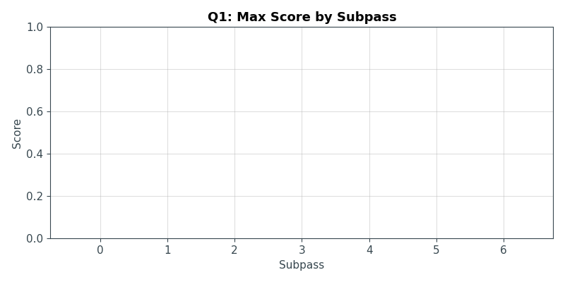
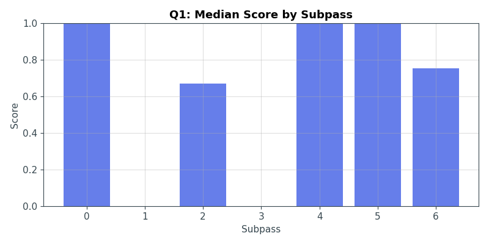
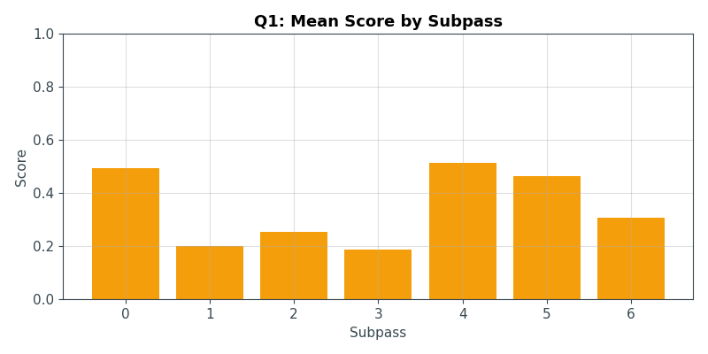
| Subtask | Best Engine | Score | Graph |
|---|---|---|---|
| 1.0 | claude-opus-4-5 | 100.0% | graph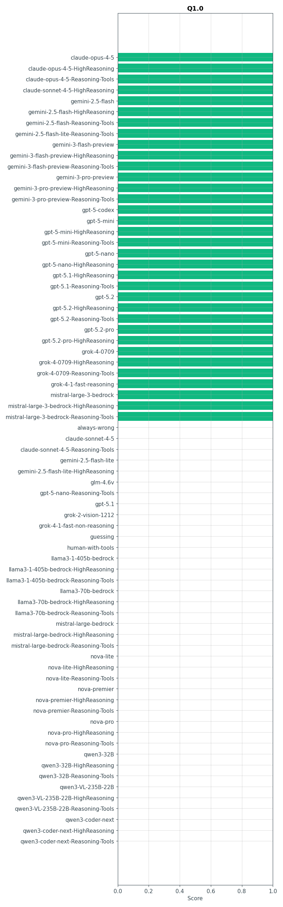 |
| 1.1 | claude-opus-4-5-HighReasoning | 100.0% | graph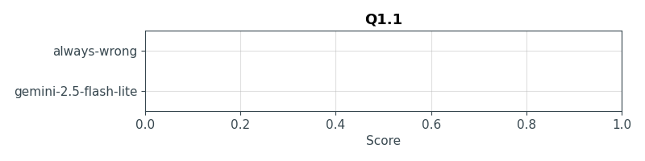 |
| 1.2 | claude-opus-4-5-HighReasoning | 100.0% | graph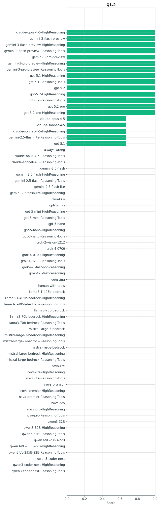 |
| 1.3 | claude-opus-4-5-HighReasoning | 100.0% | graph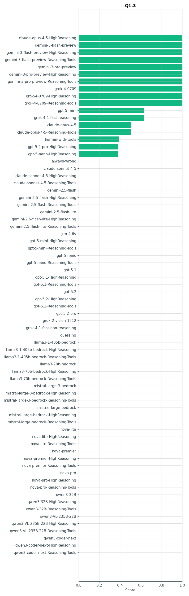 |
| 1.4 | claude-opus-4-5 | 100.0% | graph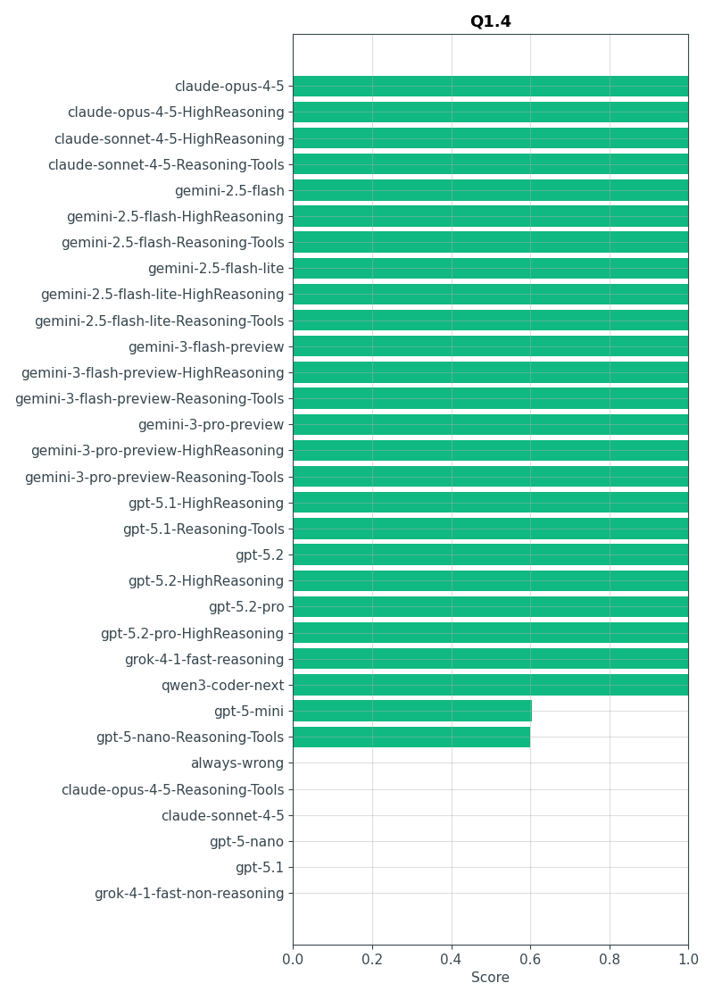 |
| 1.5 | claude-opus-4-5 | 100.0% | graph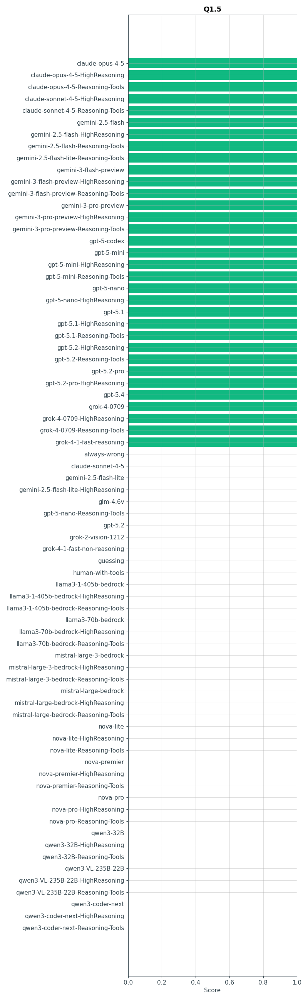 |
| 1.6 | claude-opus-4-5-HighReasoning | 100.0% | graph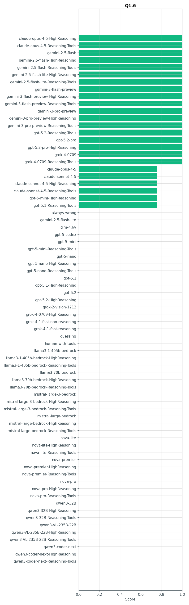 |

Best result: gemini-3-pro-preview-Reasoning-Tools (41.3%)
Placebo baseline is better

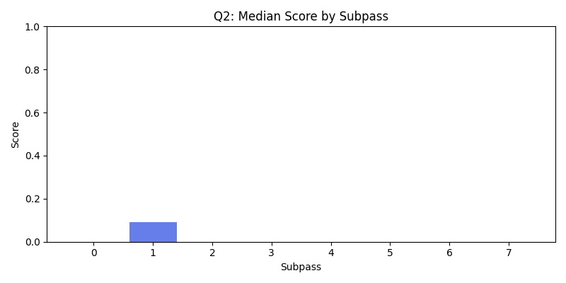
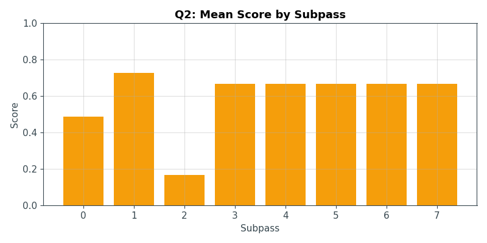
| Subtask | Best Engine | Score | Graph |
|---|---|---|---|
| 2.0 | gemini-3-pro-preview-Reasoning-Tools | 93.2% | graph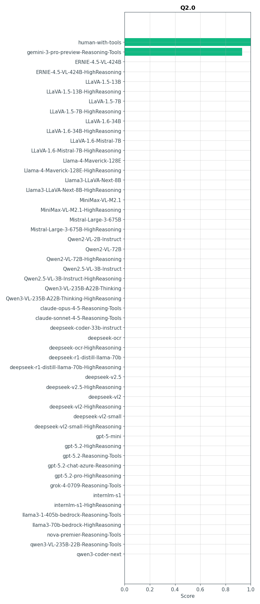 |
| 2.1 | gemini-3-pro-preview-Reasoning-Tools | 96.2% | graph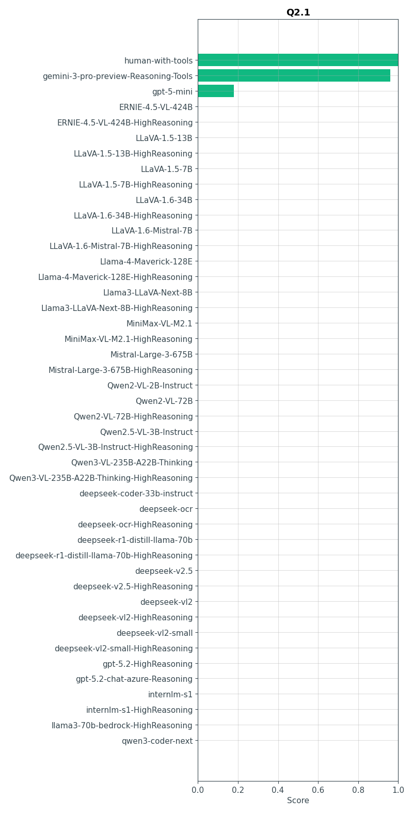 |
| 2.2 | ERNIE-4.5-VL-424B | 0.0% | graph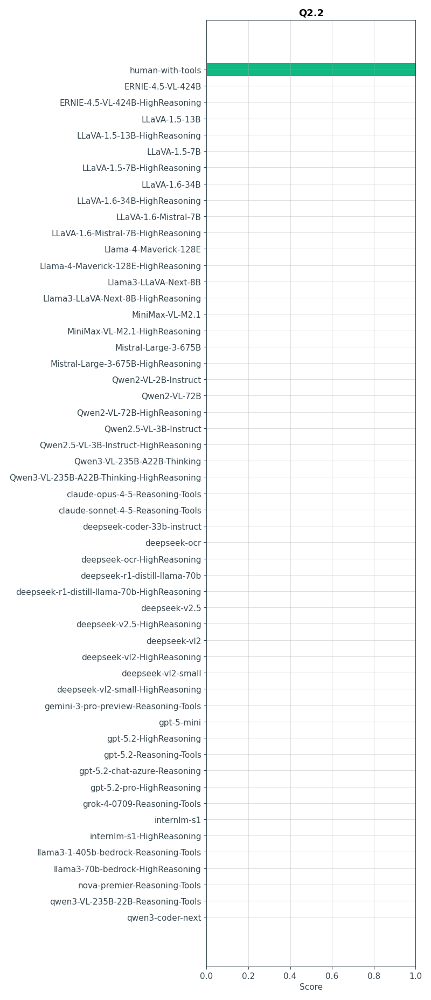 |
| 2.3 | gemini-3-pro-preview-Reasoning-Tools | 93.1% | graph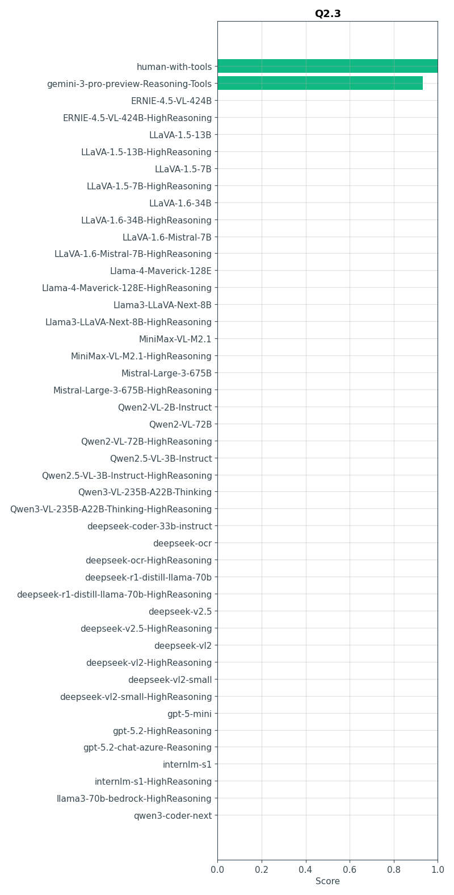 |
| 2.4 | gemini-3-pro-preview-Reasoning-Tools | 40.3% | graph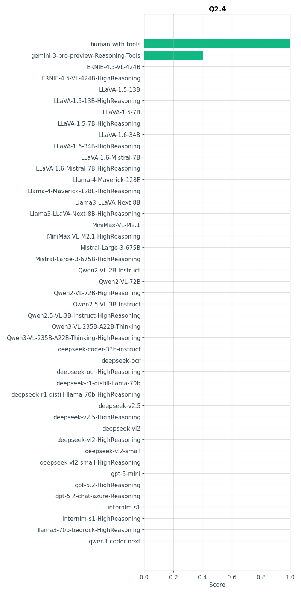 |
| 2.5 | ERNIE-4.5-VL-424B | 0.0% | graph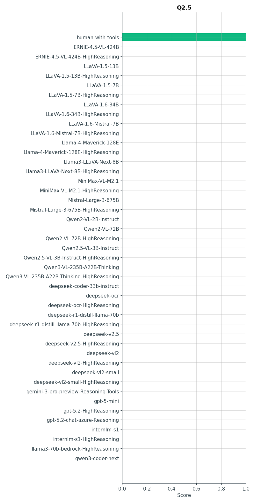 |
| 2.6 | gemini-3-pro-preview-Reasoning-Tools | 7.4% | graph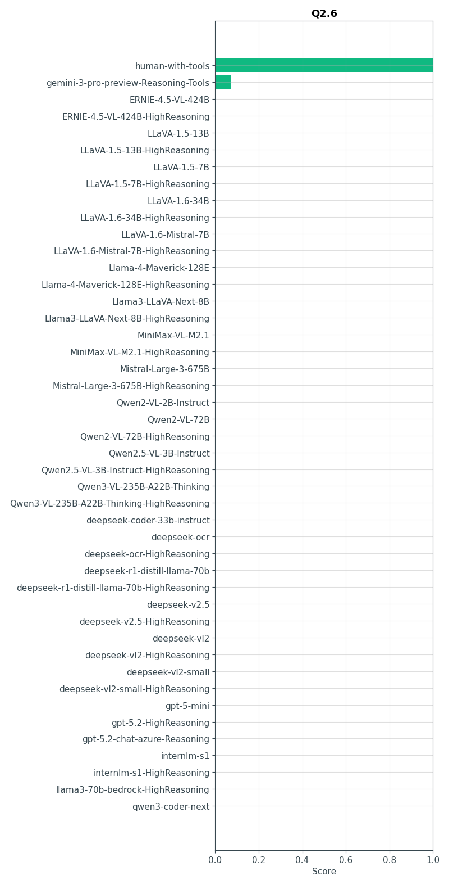 |
| 2.7 | ERNIE-4.5-VL-424B | 0.0% | graph |

Best result: claude-opus-4-5-Reasoning-Tools (100.0%)
Placebo baseline and the best AI have both mastered this.

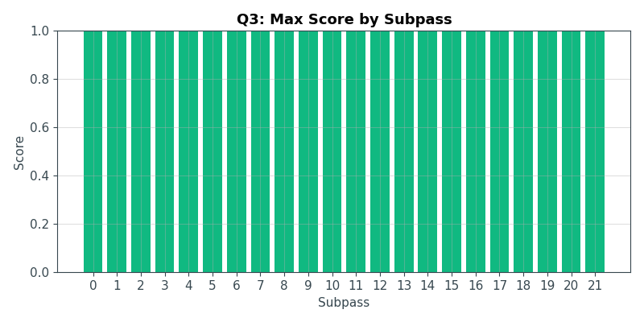
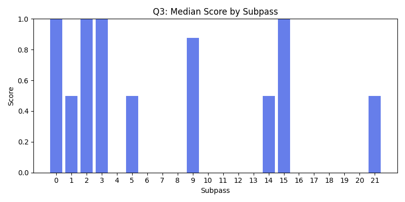
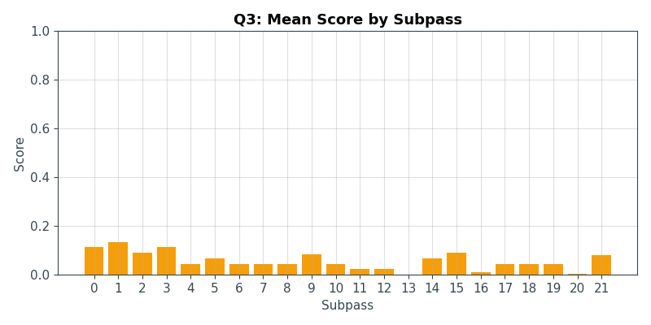

Best result: gpt-5.2-Reasoning-Tools (99.0%)
The best AI is considerably better. Placebo baseline scored 65.0%

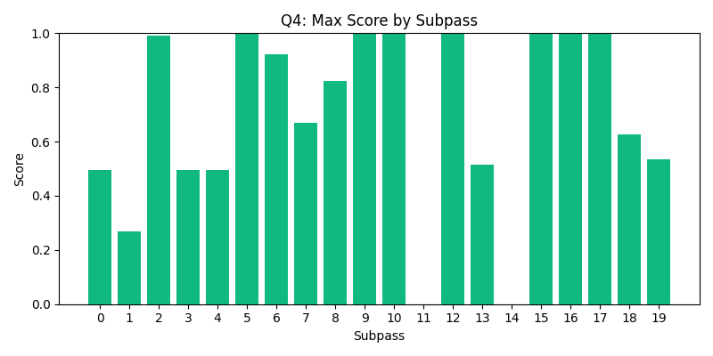
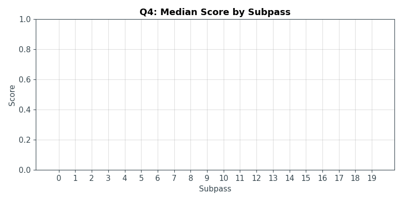
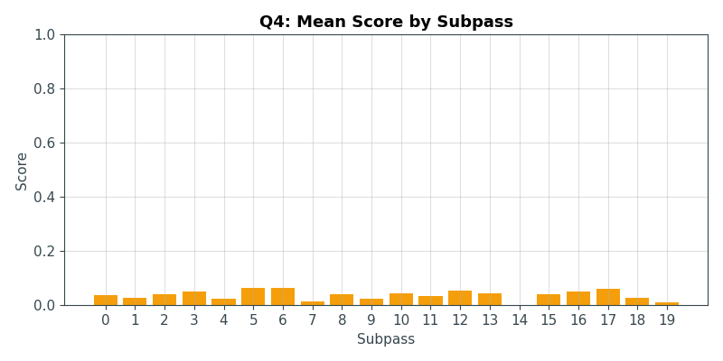

Best result: ERNIE-4.5-VL-424B (0.0%)
Neither placebo baseline nor AI have solved this.

| Subtask | Best Engine | Score | Graph |
|---|---|---|---|
| 5.0 | qwen3-coder-next | 0.0% | graph |
| 5.1 | qwen3-coder-next | 0.0% | graph |
| 5.2 | qwen3-coder-next | 0.0% | graph |
| 5.3 | qwen3-coder-next | 0.0% | graph |

Best result: claude-opus-4-5-Reasoning-Tools (100.0%)
Placebo baseline and the best AI have both mastered this.

| Subtask | Best Engine | Score | Graph |
|---|---|---|---|
| 6.0 | gemini-3-pro-preview-Reasoning-Tools | 100.0% | graph |
| 6.1 | claude-opus-4-5-Reasoning-Tools | 100.0% | graph |
| 6.2 | gemini-3-pro-preview-Reasoning-Tools | 100.0% | graph |
| 6.3 | gemini-3-pro-preview-Reasoning-Tools | 100.0% | graph |
| 6.4 | gemini-3-pro-preview-Reasoning-Tools | 100.0% | graph |
| 6.5 | gemini-3-pro-preview-Reasoning-Tools | 100.0% | graph |

Best result: claude-opus-4-5-Reasoning-Tools (100.0%)
Placebo baseline is considerably better

| Subtask | Best Engine | Score | Graph |
|---|---|---|---|
| 7.0 | gemini-3-pro-preview-Reasoning-Tools | 100.0% | graph |
| 7.1 | claude-opus-4-5-Reasoning-Tools | 100.0% | graph |
| 7.2 | ERNIE-4.5-VL-424B | 0.0% | graph |
| 7.3 | ERNIE-4.5-VL-424B | 0.0% | graph |
| 7.4 | ERNIE-4.5-VL-424B | 0.0% | graph |
| 7.5 | ERNIE-4.5-VL-424B | 0.0% | graph |

Best result: Qwen2.5-VL-3B-Instruct (111111.1%)
The best AI is considerably better. Placebo baseline scored 100.0%

| Subtask | Best Engine | Score | Graph |
|---|---|---|---|
| 8.0 | gpt-5-mini | 100.0% | graph |
| 8.1 | gemini-3-pro-preview-Reasoning-Tools | 100.0% | graph |
| 8.2 | gemini-3-pro-preview-Reasoning-Tools | 100.0% | graph |
| 8.3 | gemini-3-pro-preview-Reasoning-Tools | 100.0% | graph |
| 8.4 | gemini-3-pro-preview-Reasoning-Tools | 100.0% | graph |
| 8.5 | gemini-3-pro-preview-Reasoning-Tools | 96.1% | graph |
| 8.6 | gemini-3-pro-preview-Reasoning-Tools | 97.6% | graph |
| 8.7 | gpt-5-mini | 48.7% | graph |
| 8.8 | Qwen2.5-VL-3B-Instruct | 1000000.0% | graph |

Best result: gpt-5.2-Reasoning-Tools (100.0%)
Placebo baseline and the best AI have both mastered this.

| Subtask | Best Engine | Score | Graph |
|---|---|---|---|
| 9.0 | gemini-3-pro-preview-Reasoning-Tools | 100.0% | graph |
| 9.1 | gemini-3-pro-preview-Reasoning-Tools | 100.0% | graph |
| 9.2 | gemini-3-pro-preview-Reasoning-Tools | 100.0% | graph |
| 9.3 | gemini-3-pro-preview-Reasoning-Tools | 100.0% | graph |
| 9.4 | gemini-3-pro-preview-Reasoning-Tools | 100.0% | graph |
| 9.5 | gemini-3-pro-preview-Reasoning-Tools | 100.0% | graph |
| 9.6 | ERNIE-4.5-VL-424B | 0.0% | graph |
| 9.7 | gemini-3-pro-preview-Reasoning-Tools | 100.0% | graph |
| 9.8 | gemini-3-pro-preview-Reasoning-Tools | 100.0% | graph |
| 9.9 | gemini-3-pro-preview-Reasoning-Tools | 100.0% | graph |

Best result: qwen3-coder-next (8.0%)
The best AI is considerably better, placebo baseline scored 0 or hasn't attempted.

| Subtask | Best Engine | Score | Graph |
|---|---|---|---|
| 10.0 | qwen3-coder-next | 40.2% | graph |
| 10.1 | qwen3-coder-next | 0.0% | graph |
| 10.2 | qwen3-coder-next | 0.0% | graph |
| 10.3 | qwen3-coder-next | 0.0% | graph |
| 10.4 | qwen3-coder-next | 0.0% | graph |

Best result: gpt-5.2-Reasoning-Tools (100.0%)
Placebo baseline and the best AI have both mastered this.

| Subtask | Best Engine | Score | Graph |
|---|---|---|---|
| 11.0 | gemini-3-pro-preview-Reasoning-Tools | 100.0% | graph |
| 11.1 | gemini-3-pro-preview-Reasoning-Tools | 100.0% | graph |
| 11.2 | gemini-3-pro-preview-Reasoning-Tools | 100.0% | graph |
| 11.3 | gemini-3-pro-preview-Reasoning-Tools | 100.0% | graph |
| 11.4 | gemini-3-pro-preview-Reasoning-Tools | 100.0% | graph |
| 11.5 | gemini-3-pro-preview-Reasoning-Tools | 97.0% | graph |
| 11.6 | gemini-3-pro-preview-Reasoning-Tools | 94.0% | graph |
| 11.7 | gemini-3-pro-preview-Reasoning-Tools | 100.0% | graph |
| 11.8 | gemini-3-pro-preview-Reasoning-Tools | 93.4% | graph |
| 11.9 | gemini-3-pro-preview-Reasoning-Tools | 9.3% | graph |
| 11.10 | gemini-3-pro-preview-Reasoning-Tools | 23.6% | graph |
| 11.11 | gemini-3-pro-preview-Reasoning-Tools | 71.2% | graph |
| 11.12 | gemini-3-pro-preview-Reasoning-Tools | 10.0% | graph |

Best result: claude-opus-4-5-Reasoning-Tools (100.0%)
Placebo baseline and the best AI have both mastered this.


Best result: claude-opus-4-5-Reasoning-Tools (100.0%)
Placebo baseline and the best AI have both mastered this.

| Subtask | Best Engine | Score | Graph |
|---|---|---|---|
| 13.0 | gemini-3-pro-preview-Reasoning-Tools | 100.0% | graph |
| 13.1 | gemini-3-pro-preview-Reasoning-Tools | 100.0% | graph |
| 13.2 | gpt-5.2-HighReasoning | 100.0% | graph |
| 13.3 | gemini-3-pro-preview-Reasoning-Tools | 100.0% | graph |
| 13.4 | claude-opus-4-5-Reasoning-Tools | 100.0% | graph |
| 13.5 | gpt-5.2-HighReasoning | 100.0% | graph |

Best result: qwen3-coder-next (20.0%)
The best AI is considerably better, placebo baseline scored 0 or hasn't attempted.

| Subtask | Best Engine | Score | Graph |
|---|---|---|---|
| 14.0 | qwen3-coder-next | 0.0% | graph |
| 14.1 | qwen3-coder-next | 80.0% | graph |
| 14.2 | qwen3-coder-next | 0.0% | graph |
| 14.3 | qwen3-coder-next | 0.0% | graph |

+-----------+---+ | A A A | B | + +-------+ | | A | B B B | +---+----------+When I first wrote this I thought I'd jsut be testing LLM focus, but no, they struggle to picture the rotations and translations.
Best result: ERNIE-4.5-VL-424B (0.0%)
Neither placebo baseline nor AI have solved this.

| Subtask | Best Engine | Score | Graph |
|---|---|---|---|
| 15.0 | qwen3-coder-next | 0.0% | graph |
| 15.1 | qwen3-coder-next | 0.0% | graph |
| 15.2 | qwen3-coder-next | 0.0% | graph |
| 15.3 | qwen3-coder-next | 0.0% | graph |

Best result: claude-sonnet-4-5-Reasoning-Tools (1000000.0%)
The best AI is considerably better. Placebo baseline scored 100.0%

| Subtask | Best Engine | Score | Graph |
|---|---|---|---|
| 16.0 | gpt-5-mini | 100.0% | graph |
| 16.1 | claude-sonnet-4-5-Reasoning-Tools | 1000000.0% | graph |
| 16.2 | gpt-5.2-HighReasoning | 100.0% | graph |
| 16.3 | ERNIE-4.5-VL-424B | 0.0% | graph |
| 16.4 | ERNIE-4.5-VL-424B | 0.0% | graph |
| 16.5 | gpt-5-mini | 72.9% | graph |
| 16.6 | ERNIE-4.5-VL-424B | 0.0% | graph |
| 16.7 | ERNIE-4.5-VL-424B | 0.0% | graph |
| 16.8 | ERNIE-4.5-VL-424B | 0.0% | graph |

Best result: qwen3-coder-next (0.0%)
The best AI is considerably better, placebo baseline scored 0 or hasn't attempted.

| Subtask | Best Engine | Score | Graph |
|---|---|---|---|
| 17.0 | qwen3-coder-next | 0.0% | graph |

Best result: ERNIE-4.5-VL-424B (0.0%)
Neither placebo baseline nor AI have solved this.

| Subtask | Best Engine | Score | Graph |
|---|---|---|---|
| 18.0 | qwen3-coder-next | 0.0% | graph |
| 18.1 | qwen3-coder-next | 0.0% | graph |
| 18.2 | qwen3-coder-next | 0.0% | graph |
| 18.3 | qwen3-coder-next | 0.0% | graph |

Best result: ERNIE-4.5-VL-424B (0.0%)
Neither placebo baseline nor AI have solved this.

| Subtask | Best Engine | Score | Graph |
|---|---|---|---|
| 19.0 | qwen3-coder-next | 0.0% | graph |
| 19.1 | qwen3-coder-next | 0.0% | graph |
| 19.2 | qwen3-coder-next | 0.0% | graph |
| 19.3 | qwen3-coder-next | 0.0% | graph |
| 19.4 | qwen3-coder-next | 0.0% | graph |
| 19.5 | qwen3-coder-next | 0.0% | graph |
| 19.6 | qwen3-coder-next | 0.0% | graph |
| 19.7 | qwen3-coder-next | 0.0% | graph |
| 19.8 | qwen3-coder-next | 0.0% | graph |

Best result: ERNIE-4.5-VL-424B (0.0%)
Neither placebo baseline nor AI have solved this.

| Subtask | Best Engine | Score | Graph |
|---|---|---|---|
| 20.0 | qwen3-coder-next | 0.0% | graph |
| 20.1 | qwen3-coder-next | 0.0% | graph |
| 20.2 | qwen3-coder-next | 0.0% | graph |
| 20.3 | qwen3-coder-next | 0.0% | graph |
| 20.4 | qwen3-coder-next | 0.0% | graph |

Best result: ERNIE-4.5-VL-424B (0.0%)
Neither placebo baseline nor AI have solved this.

| Subtask | Best Engine | Score | Graph |
|---|---|---|---|
| 21.0 | qwen3-coder-next | 0.0% | graph |
| 21.1 | qwen3-coder-next | 0.0% | graph |
| 21.2 | qwen3-coder-next | 0.0% | graph |
| 21.3 | qwen3-coder-next | 0.0% | graph |
| 21.4 | qwen3-coder-next | 0.0% | graph |
| 21.5 | qwen3-coder-next | 0.0% | graph |

Best result: ERNIE-4.5-VL-424B (0.0%)
Neither placebo baseline nor AI have solved this.

| Subtask | Best Engine | Score | Graph |
|---|---|---|---|
| 22.0 | qwen3-coder-next | 0.0% | graph |
| 22.1 | qwen3-coder-next | 0.0% | graph |
| 22.2 | qwen3-coder-next | 0.0% | graph |
| 22.3 | qwen3-coder-next | 0.0% | graph |
| 22.4 | qwen3-coder-next | 0.0% | graph |
| 22.5 | qwen3-coder-next | 0.0% | graph |
| 22.6 | qwen3-coder-next | 0.0% | graph |
| 22.7 | qwen3-coder-next | 0.0% | graph |

Best result: claude-opus-4-5-Reasoning-Tools (100.0%)
Placebo baseline and the best AI have both mastered this.

| Subtask | Best Engine | Score | Graph |
|---|---|---|---|
| 23.0 | LLaVA-1.6-34B-HighReasoning | 100.0% | graph |
| 23.1 | gpt-5-mini | 100.0% | graph |
| 23.2 | gpt-5-mini | 100.0% | graph |
| 23.3 | gpt-5.2-HighReasoning | 100.0% | graph |
| 23.4 | gpt-5-mini | 100.0% | graph |
| 23.5 | gpt-5-mini | 100.0% | graph |
| 23.6 | gpt-5-mini | 100.0% | graph |
| 23.7 | gpt-5-mini | 100.0% | graph |
| 23.8 | gpt-5.2-HighReasoning | 100.0% | graph |
| 23.9 | gpt-5-mini | 100.0% | graph |
| 23.10 | gpt-5.2-HighReasoning | 100.0% | graph |

Best result: ERNIE-4.5-VL-424B (0.0%)
Neither placebo baseline nor AI have solved this.

| Subtask | Best Engine | Score | Graph |
|---|---|---|---|
| 24.0 | qwen3-coder-next | 0.0% | graph |
| 24.1 | qwen3-coder-next | 0.0% | graph |
| 24.2 | qwen3-coder-next | 0.0% | graph |
| 24.3 | qwen3-coder-next | 0.0% | graph |
| 24.4 | qwen3-coder-next | 0.0% | graph |
| 24.5 | qwen3-coder-next | 0.0% | graph |

Best result: qwen3-coder-next (12.4%)
The best AI is considerably better, placebo baseline scored 0 or hasn't attempted.

| Subtask | Best Engine | Score | Graph |
|---|---|---|---|
| 25.0 | qwen3-coder-next | 47.6% | graph |
| 25.1 | qwen3-coder-next | 11.3% | graph |
| 25.2 | qwen3-coder-next | 15.5% | graph |
| 25.3 | qwen3-coder-next | 0.0% | graph |
| 25.4 | qwen3-coder-next | 0.0% | graph |
| 25.5 | qwen3-coder-next | 0.0% | graph |

Best result: ERNIE-4.5-VL-424B (0.0%)
Neither placebo baseline nor AI have solved this.

| Subtask | Best Engine | Score | Graph |
|---|---|---|---|
| 26.0 | qwen3-coder-next | 0.0% | graph |
| 26.1 | qwen3-coder-next | 0.0% | graph |
| 26.2 | qwen3-coder-next | 0.0% | graph |
| 26.3 | qwen3-coder-next | 0.0% | graph |
| 26.4 | qwen3-coder-next | 0.0% | graph |

Best result: ERNIE-4.5-VL-424B (0.0%)
Neither placebo baseline nor AI have solved this.

| Subtask | Best Engine | Score | Graph |
|---|---|---|---|
| 27.0 | qwen3-coder-next | 0.0% | graph |
| 27.1 | qwen3-coder-next | 0.0% | graph |
| 27.2 | qwen3-coder-next | 0.0% | graph |
| 27.3 | qwen3-coder-next | 0.0% | graph |
| 27.4 | qwen3-coder-next | 0.0% | graph |

Best result: grok-4-0709-Reasoning-Tools (1.6%)
Placebo baseline is considerably better

| Subtask | Best Engine | Score | Graph |
|---|---|---|---|
| 28.0 | gemini-3-pro-preview-Reasoning-Tools | 1.6% | graph |
| 28.1 | ERNIE-4.5-VL-424B | 0.0% | graph |
| 28.2 | ERNIE-4.5-VL-424B | 0.0% | graph |
| 28.3 | ERNIE-4.5-VL-424B | 0.0% | graph |
| 28.4 | ERNIE-4.5-VL-424B | 0.0% | graph |
| 28.5 | ERNIE-4.5-VL-424B | 0.0% | graph |
| 28.6 | ERNIE-4.5-VL-424B | 0.0% | graph |
| 28.7 | ERNIE-4.5-VL-424B | 0.0% | graph |
| 28.8 | ERNIE-4.5-VL-424B | 0.0% | graph |

Best result: ERNIE-4.5-VL-424B (0.0%)
Placebo baseline is considerably better

| Subtask | Best Engine | Score | Graph |
|---|---|---|---|
| 29.0 | ERNIE-4.5-VL-424B | 0.0% | graph |
| 29.1 | ERNIE-4.5-VL-424B | 0.0% | graph |
| 29.2 | ERNIE-4.5-VL-424B | 0.0% | graph |
| 29.3 | ERNIE-4.5-VL-424B | 0.0% | graph |
| 29.4 | ERNIE-4.5-VL-424B | 0.0% | graph |
| 29.5 | ERNIE-4.5-VL-424B | 0.0% | graph |
| 29.6 | ERNIE-4.5-VL-424B | 0.0% | graph |
| 29.7 | ERNIE-4.5-VL-424B | 0.0% | graph |
| 29.8 | ERNIE-4.5-VL-424B | 0.0% | graph |

Best result: gpt-5.2-chat-azure-Reasoning-7 (1000000.0%)
The best AI is considerably better. Placebo baseline scored 100.0%

| Subtask | Best Engine | Score | Graph |
|---|---|---|---|
| 30.0 | ERNIE-4.5-VL-424B | 0.0% | graph |

Best result: qwen3-coder-next (33.3%)
The best AI is considerably better, placebo baseline scored 0 or hasn't attempted.

| Subtask | Best Engine | Score | Graph |
|---|---|---|---|
| 31.0 | qwen3-coder-next | 100.0% | graph |
| 31.1 | qwen3-coder-next | 0.0% | graph |
| 31.2 | qwen3-coder-next | 0.0% | graph |
Best result: qwen3-coder-next (35.4%)
The best AI is considerably better, placebo baseline scored 0 or hasn't attempted.
| Subtask | Best Engine | Score | Graph |
|---|---|---|---|
| 32.0 | qwen3-coder-next | 35.4% | graph |
Best result: qwen3-coder-next (33.3%)
The best AI is considerably better, placebo baseline scored 0 or hasn't attempted.
| Subtask | Best Engine | Score | Graph |
|---|---|---|---|
| 33.0 | qwen3-coder-next | 100.0% | graph |
| 33.1 | qwen3-coder-next | 100.0% | graph |
| 33.2 | qwen3-coder-next | 0.0% | graph |
| 33.3 | qwen3-coder-next | 0.0% | graph |
| 33.4 | qwen3-coder-next | 0.0% | graph |
| 33.5 | qwen3-coder-next | 0.0% | graph |

Best result: qwen3-coder-next (8.9%)
The best AI is considerably better, placebo baseline scored 0 or hasn't attempted.
| Subtask | Best Engine | Score | Graph |
|---|---|---|---|
| 34.0 | qwen3-coder-next | 0.0% | graph |
| 34.1 | qwen3-coder-next | 0.0% | graph |
| 34.2 | qwen3-coder-next | 0.0% | graph |
| 34.3 | qwen3-coder-next | 50.0% | graph |
| 34.4 | qwen3-coder-next | 0.0% | graph |
| 34.5 | qwen3-coder-next | 0.0% | graph |
| 34.6 | qwen3-coder-next | 12.5% | graph |
Best result: qwen3-coder-next (31.0%)
The best AI is considerably better, placebo baseline scored 0 or hasn't attempted.
| Subtask | Best Engine | Score | Graph |
|---|---|---|---|
| 35.0 | qwen3-coder-next | 0.0% | graph |
| 35.1 | qwen3-coder-next | 100.0% | graph |
| 35.2 | qwen3-coder-next | 0.0% | graph |
| 35.3 | qwen3-coder-next | 0.0% | graph |
| 35.4 | qwen3-coder-next | 0.0% | graph |
| 35.5 | qwen3-coder-next | 100.0% | graph |
| 35.6 | qwen3-coder-next | 0.0% | graph |
| 35.7 | qwen3-coder-next | 100.0% | graph |
| 35.8 | qwen3-coder-next | 58.2% | graph |
| 35.9 | qwen3-coder-next | 0.0% | graph |
| 35.10 | qwen3-coder-next | 44.4% | graph |
| 35.11 | qwen3-coder-next | 0.0% | graph |
| 35.12 | qwen3-coder-next | 0.0% | graph |

Best result: qwen3-coder-next (68.1%)
The best AI is considerably better, placebo baseline scored 0 or hasn't attempted.
| Subtask | Best Engine | Score | Graph |
|---|---|---|---|
| 36.0 | qwen3-coder-next | 100.0% | graph |
| 36.1 | qwen3-coder-next | 100.0% | graph |
| 36.2 | qwen3-coder-next | 100.0% | graph |
| 36.3 | qwen3-coder-next | 100.0% | graph |
| 36.4 | qwen3-coder-next | 100.0% | graph |
| 36.5 | qwen3-coder-next | 100.0% | graph |
| 36.6 | qwen3-coder-next | 100.0% | graph |
| 36.7 | qwen3-coder-next | 100.0% | graph |
| 36.8 | qwen3-coder-next | 0.0% | graph |
| 36.9 | qwen3-coder-next | 100.0% | graph |
| 36.10 | qwen3-coder-next | 0.0% | graph |
| 36.11 | qwen3-coder-next | 100.0% | graph |
| 36.12 | qwen3-coder-next | 100.0% | graph |
| 36.13 | qwen3-coder-next | 100.0% | graph |
| 36.14 | qwen3-coder-next | 100.0% | graph |
| 36.15 | qwen3-coder-next | 100.0% | graph |
| 36.16 | qwen3-coder-next | 100.0% | graph |
| 36.17 | qwen3-coder-next | 100.0% | graph |
| 36.18 | qwen3-coder-next | 100.0% | graph |
| 36.19 | qwen3-coder-next | 0.0% | graph |
| 36.20 | qwen3-coder-next | 100.0% | graph |
| 36.21 | qwen3-coder-next | 100.0% | graph |
| 36.22 | qwen3-coder-next | 100.0% | graph |
| 36.23 | qwen3-coder-next | 0.0% | graph |
| 36.24 | qwen3-coder-next | 100.0% | graph |
| 36.25 | qwen3-coder-next | 100.0% | graph |
| 36.26 | qwen3-coder-next | 100.0% | graph |
| 36.27 | qwen3-coder-next | 100.0% | graph |
| 36.28 | qwen3-coder-next | 100.0% | graph |
| 36.29 | qwen3-coder-next | 100.0% | graph |
| 36.30 | qwen3-coder-next | 100.0% | graph |
| 36.31 | qwen3-coder-next | 100.0% | graph |
| 36.32 | qwen3-coder-next | 25.0% | graph |
| 36.33 | qwen3-coder-next | 0.0% | graph |
| 36.34 | qwen3-coder-next | 100.0% | graph |
| 36.35 | qwen3-coder-next | 100.0% | graph |
| 36.36 | qwen3-coder-next | 100.0% | graph |
| 36.37 | qwen3-coder-next | 100.0% | graph |
| 36.38 | qwen3-coder-next | 25.0% | graph |
| 36.39 | qwen3-coder-next | 0.0% | graph |
| 36.40 | qwen3-coder-next | 100.0% | graph |
| 36.41 | qwen3-coder-next | 0.0% | graph |
| 36.42 | qwen3-coder-next | 0.0% | graph |
| 36.43 | qwen3-coder-next | 100.0% | graph |
| 36.44 | qwen3-coder-next | 0.0% | graph |
| 36.45 | qwen3-coder-next | 100.0% | graph |
| 36.46 | qwen3-coder-next | 0.0% | graph |
| 36.47 | qwen3-coder-next | 0.0% | graph |
| 36.48 | qwen3-coder-next | 100.0% | graph |
| 36.49 | qwen3-coder-next | 0.0% | graph |
| 36.50 | qwen3-coder-next | 100.0% | graph |
| 36.51 | qwen3-coder-next | 25.0% | graph |
| 36.52 | qwen3-coder-next | 100.0% | graph |
| 36.53 | qwen3-coder-next | 100.0% | graph |
| 36.54 | qwen3-coder-next | 0.0% | graph |
| 36.55 | qwen3-coder-next | 0.0% | graph |
| 36.56 | qwen3-coder-next | 100.0% | graph |
| 36.57 | qwen3-coder-next | 0.0% | graph |
| 36.58 | qwen3-coder-next | 100.0% | graph |
| 36.59 | qwen3-coder-next | 100.0% | graph |
| 36.60 | qwen3-coder-next | 0.0% | graph |
| 36.61 | qwen3-coder-next | 100.0% | graph |
| 36.62 | qwen3-coder-next | 100.0% | graph |
| 36.63 | qwen3-coder-next | 0.0% | graph |
| 36.64 | qwen3-coder-next | 100.0% | graph |
| 36.65 | qwen3-coder-next | 100.0% | graph |
| 36.66 | qwen3-coder-next | 0.0% | graph |
| 36.67 | qwen3-coder-next | 25.0% | graph |
| 36.68 | qwen3-coder-next | 0.0% | graph |

Best result: qwen3-coder-next (58.6%)
The best AI is considerably better, placebo baseline scored 0 or hasn't attempted.
| Subtask | Best Engine | Score | Graph |
|---|---|---|---|
| 37.0 | qwen3-coder-next | 100.0% | graph |
| 37.1 | qwen3-coder-next | 9.0% | graph |
| 37.2 | qwen3-coder-next | 100.0% | graph |
| 37.3 | qwen3-coder-next | 100.0% | graph |
| 37.4 | qwen3-coder-next | 100.0% | graph |
| 37.5 | qwen3-coder-next | 0.0% | graph |
| 37.6 | qwen3-coder-next | 59.7% | graph |
| 37.7 | qwen3-coder-next | 0.0% | graph |
Best result: qwen3-coder-next (19.9%)
The best AI is considerably better, placebo baseline scored 0 or hasn't attempted.
| Subtask | Best Engine | Score | Graph |
|---|---|---|---|
| 38.0 | qwen3-coder-next | 64.0% | graph |
| 38.1 | qwen3-coder-next | 0.0% | graph |
| 38.2 | qwen3-coder-next | 100.0% | graph |
| 38.3 | qwen3-coder-next | 0.0% | graph |
| 38.4 | qwen3-coder-next | 0.0% | graph |
| 38.5 | qwen3-coder-next | 0.0% | graph |
| 38.6 | qwen3-coder-next | 2.2% | graph |
| 38.7 | qwen3-coder-next | 43.8% | graph |
| 38.8 | qwen3-coder-next | 0.9% | graph |
| 38.9 | qwen3-coder-next | 0.0% | graph |
| 38.10 | qwen3-coder-next | 0.0% | graph |
| 38.11 | qwen3-coder-next | 100.0% | graph |
| 38.12 | qwen3-coder-next | 31.2% | graph |
| 38.13 | qwen3-coder-next | 0.0% | graph |
| 38.14 | qwen3-coder-next | 0.0% | graph |
| 38.15 | qwen3-coder-next | 0.0% | graph |
| 38.16 | qwen3-coder-next | 93.1% | graph |
| 38.17 | qwen3-coder-next | 10.8% | graph |
| 38.18 | qwen3-coder-next | 0.0% | graph |
| 38.19 | qwen3-coder-next | 0.0% | graph |
| 38.20 | qwen3-coder-next | 0.0% | graph |
| 38.21 | qwen3-coder-next | 0.0% | graph |
| 38.22 | qwen3-coder-next | 6.0% | graph |
| 38.23 | qwen3-coder-next | 0.0% | graph |
| 38.24 | qwen3-coder-next | 49.0% | graph |
| 38.25 | qwen3-coder-next | 11.2% | graph |
| 38.26 | qwen3-coder-next | 62.7% | graph |
| 38.27 | qwen3-coder-next | 23.0% | graph |
| 38.28 | qwen3-coder-next | 0.0% | graph |
| 38.29 | qwen3-coder-next | 0.0% | graph |

Best result: qwen3-coder-next (57.7%)
The best AI is considerably better, placebo baseline scored 0 or hasn't attempted.
| Subtask | Best Engine | Score | Graph |
|---|---|---|---|
| 39.0 | qwen3-coder-next | 100.0% | graph |
| 39.1 | qwen3-coder-next | 0.0% | graph |
| 39.2 | qwen3-coder-next | 100.0% | graph |
| 39.3 | qwen3-coder-next | 100.0% | graph |
| 39.4 | qwen3-coder-next | 100.0% | graph |
| 39.5 | qwen3-coder-next | 0.0% | graph |
| 39.6 | qwen3-coder-next | 0.0% | graph |
| 39.7 | qwen3-coder-next | 0.0% | graph |
| 39.8 | qwen3-coder-next | 100.0% | graph |
| 39.9 | qwen3-coder-next | 77.2% | graph |
Best result: ERNIE-4.5-VL-424B (0.0%)
Neither placebo baseline nor AI have solved this.
| Subtask | Best Engine | Score | Graph |
|---|---|---|---|
| 40.0 | qwen3-coder-next | 0.0% | graph |
| 40.1 | qwen3-coder-next | 0.0% | graph |
| 40.2 | qwen3-coder-next | 0.0% | graph |
| 40.3 | qwen3-coder-next | 0.0% | graph |
| 40.4 | qwen3-coder-next | 0.0% | graph |
| 40.5 | qwen3-coder-next | 0.0% | graph |
| 40.6 | qwen3-coder-next | 0.0% | graph |
| 40.7 | qwen3-coder-next | 0.0% | graph |
| 40.8 | qwen3-coder-next | 0.0% | graph |
Best result: qwen3-coder-next (2.4%)
The best AI is considerably better, placebo baseline scored 0 or hasn't attempted.
| Subtask | Best Engine | Score | Graph |
|---|---|---|---|
| 41.0 | qwen3-coder-next | 9.7% | graph |
| 41.1 | qwen3-coder-next | 0.0% | graph |
| 41.2 | qwen3-coder-next | 0.0% | graph |
| 41.3 | qwen3-coder-next | 0.0% | graph |


Best result: ERNIE-4.5-VL-424B (0.0%)
Neither placebo baseline nor AI have solved this.
| Subtask | Best Engine | Score | Graph |
|---|---|---|---|
| 42.0 | qwen3-coder-next | 0.0% | graph |
| 42.1 | qwen3-coder-next | 0.0% | graph |
| 42.2 | qwen3-coder-next | 0.0% | graph |

Best result: ERNIE-4.5-VL-424B (0.0%)
Neither placebo baseline nor AI have solved this.
| Subtask | Best Engine | Score | Graph |
|---|---|---|---|
| 43.0 | qwen3-coder-next | 0.0% | graph |
| 43.1 | qwen3-coder-next | 0.0% | graph |
| 43.2 | qwen3-coder-next | 0.0% | graph |
| 43.3 | qwen3-coder-next | 0.0% | graph |
| 43.4 | qwen3-coder-next | 0.0% | graph |
| 43.5 | qwen3-coder-next | 0.0% | graph |


Best result: ERNIE-4.5-VL-424B (0.0%)
Neither placebo baseline nor AI have solved this.
| Subtask | Best Engine | Score | Graph |
|---|---|---|---|
| 44.0 | qwen3-coder-next | 0.0% | graph |
| 44.1 | qwen3-coder-next | 0.0% | graph |
| 44.2 | qwen3-coder-next | 0.0% | graph |
| 44.3 | qwen3-coder-next | 0.0% | graph |
| 44.4 | qwen3-coder-next | 0.0% | graph |

Best result: ERNIE-4.5-VL-424B (0.0%)
Neither placebo baseline nor AI have solved this.
| Subtask | Best Engine | Score | Graph |
|---|---|---|---|
| 45.0 | qwen3-coder-next | 0.0% | graph |
| 45.1 | qwen3-coder-next | 0.0% | graph |
| 45.2 | qwen3-coder-next | 0.0% | graph |
| 45.3 | qwen3-coder-next | 0.0% | graph |
| 45.4 | qwen3-coder-next | 0.0% | graph |
| 45.5 | qwen3-coder-next | 0.0% | graph |
| 45.6 | qwen3-coder-next | 0.0% | graph |
| 45.7 | qwen3-coder-next | 0.0% | graph |
| 45.8 | qwen3-coder-next | 0.0% | graph |
| 45.9 | qwen3-coder-next | 0.0% | graph |
| 45.10 | qwen3-coder-next | 0.0% | graph |
| 45.11 | qwen3-coder-next | 0.0% | graph |
| 45.12 | qwen3-coder-next | 0.0% | graph |
| 45.13 | qwen3-coder-next | 0.0% | graph |
| 45.14 | qwen3-coder-next | 0.0% | graph |
| 45.15 | qwen3-coder-next | 0.0% | graph |
| 45.16 | qwen3-coder-next | 0.0% | graph |
| 45.17 | qwen3-coder-next | 0.0% | graph |
| 45.18 | qwen3-coder-next | 0.0% | graph |
| 45.19 | qwen3-coder-next | 0.0% | graph |
| 45.20 | qwen3-coder-next | 0.0% | graph |
| 45.21 | qwen3-coder-next | 0.0% | graph |
| 45.22 | qwen3-coder-next | 0.0% | graph |
| 45.23 | qwen3-coder-next | 0.0% | graph |
| 45.24 | qwen3-coder-next | 0.0% | graph |
| 45.25 | qwen3-coder-next | 0.0% | graph |
| 45.26 | qwen3-coder-next | 0.0% | graph |
| 45.27 | qwen3-coder-next | 0.0% | graph |
| 45.28 | qwen3-coder-next | 0.0% | graph |
| 45.29 | qwen3-coder-next | 0.0% | graph |
| 45.30 | qwen3-coder-next | 0.0% | graph |
| 45.31 | qwen3-coder-next | 0.0% | graph |
| 45.32 | qwen3-coder-next | 0.0% | graph |
| 45.33 | qwen3-coder-next | 0.0% | graph |
| 45.34 | qwen3-coder-next | 0.0% | graph |
| 45.35 | qwen3-coder-next | 0.0% | graph |
| 45.36 | qwen3-coder-next | 0.0% | graph |
| 45.37 | qwen3-coder-next | 0.0% | graph |
| 45.38 | qwen3-coder-next | 0.0% | graph |
| 45.39 | qwen3-coder-next | 0.0% | graph |
| 45.40 | qwen3-coder-next | 0.0% | graph |
| 45.41 | qwen3-coder-next | 0.0% | graph |
| 45.42 | qwen3-coder-next | 0.0% | graph |
| 45.43 | qwen3-coder-next | 0.0% | graph |
| 45.44 | qwen3-coder-next | 0.0% | graph |
| 45.45 | qwen3-coder-next | 0.0% | graph |
| 45.46 | qwen3-coder-next | 0.0% | graph |
| 45.47 | qwen3-coder-next | 0.0% | graph |
| 45.48 | qwen3-coder-next | 0.0% | graph |
Best result: qwen3-coder-next (10.0%)
The best AI is considerably better, placebo baseline scored 0 or hasn't attempted.
| Subtask | Best Engine | Score | Graph |
|---|---|---|---|
| 46.0 | qwen3-coder-next | 20.0% | graph |
| 46.1 | qwen3-coder-next | 0.0% | graph |
Best result: ERNIE-4.5-VL-424B (0.0%)
Neither placebo baseline nor AI have solved this.
| Subtask | Best Engine | Score | Graph |
|---|---|---|---|
| 47.0 | qwen3-coder-next | 0.0% | graph |
| 47.1 | qwen3-coder-next | 0.0% | graph |
| 47.2 | qwen3-coder-next | 0.0% | graph |
| 47.3 | qwen3-coder-next | 0.0% | graph |
| 47.4 | qwen3-coder-next | 0.0% | graph |
| 47.5 | qwen3-coder-next | 0.0% | graph |
| 47.6 | qwen3-coder-next | 0.0% | graph |
| 47.7 | qwen3-coder-next | 0.0% | graph |
Best result: ERNIE-4.5-VL-424B (0.0%)
Neither placebo baseline nor AI have solved this.
| Subtask | Best Engine | Score | Graph |
|---|---|---|---|
| 48.0 | qwen3-coder-next | 0.0% | graph |
| 48.1 | qwen3-coder-next | 0.0% | graph |
| 48.2 | qwen3-coder-next | 0.0% | graph |
| 48.3 | qwen3-coder-next | 0.0% | graph |
| 48.4 | qwen3-coder-next | 0.0% | graph |
| 48.5 | qwen3-coder-next | 0.0% | graph |
| 48.6 | qwen3-coder-next | 0.0% | graph |
| 48.7 | qwen3-coder-next | 0.0% | graph |
Best result: ERNIE-4.5-VL-424B (0.0%)
Neither placebo baseline nor AI have solved this.
| Subtask | Best Engine | Score | Graph |
|---|---|---|---|
| 49.0 | qwen3-coder-next | 0.0% | graph |

Best result: ERNIE-4.5-VL-424B (0.0%)
Neither placebo baseline nor AI have solved this.
| Subtask | Best Engine | Score | Graph |
|---|---|---|---|
| 50.0 | qwen3-coder-next | 0.0% | graph |
| 50.1 | qwen3-coder-next | 0.0% | graph |
| 50.2 | qwen3-coder-next | 0.0% | graph |
| 50.3 | qwen3-coder-next | 0.0% | graph |

Best result: gpt-5.2-HighReasoning (30.0%)
Placebo baseline is better
| Subtask | Best Engine | Score | Graph |
|---|---|---|---|
| 51.0 | gpt-5.2-HighReasoning | 100.0% | graph |
| 51.1 | ERNIE-4.5-VL-424B | 0.0% | graph |
| 51.2 | ERNIE-4.5-VL-424B | 0.0% | graph |
| 51.3 | ERNIE-4.5-VL-424B | 0.0% | graph |
| 51.4 | ERNIE-4.5-VL-424B | 0.0% | graph |
| 51.5 | gpt-5.2-HighReasoning | 100.0% | graph |
| 51.6 | gpt-5.2-HighReasoning | 100.0% | graph |
| 51.7 | LLaVA-1.5-13B | 0.0% | graph |
| 51.8 | LLaVA-1.5-13B | 0.0% | graph |
| 51.9 | LLaVA-1.5-13B | 0.0% | graph |

Best result: gpt-5.2-HighReasoning (100.0%)
Placebo baseline and the best AI have both mastered this.
| Subtask | Best Engine | Score | Graph |
|---|---|---|---|
| 52.0 | gpt-5-mini | 100.0% | graph |
| 52.1 | gpt-5.2-HighReasoning | 100.0% | graph |
| 52.2 | gpt-5.2-HighReasoning | 100.0% | graph |
| 52.3 | gpt-5.2-HighReasoning | 100.0% | graph |
| 52.4 | gpt-5.2-HighReasoning | 100.0% | graph |
| 52.5 | gpt-5.2-HighReasoning | 100.0% | graph |
| 52.6 | gpt-5.2-HighReasoning | 100.0% | graph |
| 52.7 | gpt-5.2-HighReasoning | 100.0% | graph |

Best result: gpt-5-mini (66.7%)
Placebo baseline is better
| Subtask | Best Engine | Score | Graph |
|---|---|---|---|
| 53.0 | gpt-5-mini | 100.0% | graph |
| 53.1 | gpt-5-mini | 100.0% | graph |
| 53.2 | ERNIE-4.5-VL-424B | 0.0% | graph |
| 53.3 | LLaVA-1.5-13B | 0.0% | graph |
| 53.4 | gpt-5.2-HighReasoning | 100.0% | graph |
| 53.5 | LLaVA-1.5-13B | 0.0% | graph |
| 53.6 | gpt-5.2-HighReasoning | 100.0% | graph |
| 53.7 | LLaVA-1.5-13B | 0.0% | graph |
| 53.8 | gpt-5.2-HighReasoning | 100.0% | graph |
| 53.9 | gpt-5.2-HighReasoning | 100.0% | graph |
| 53.10 | LLaVA-1.5-13B | 0.0% | graph |
| 53.11 | LLaVA-1.5-13B | 0.0% | graph |
| 53.12 | gpt-5.2-HighReasoning | 100.0% | graph |

Best result: gpt-5.2-HighReasoning (82.4%)
Placebo baseline is better
| Subtask | Best Engine | Score | Graph |
|---|---|---|---|
| 54.0 | gpt-5.2-HighReasoning | 100.0% | graph |
| 54.1 | ERNIE-4.5-VL-424B | 0.0% | graph |
| 54.2 | gpt-5-mini | 100.0% | graph |
| 54.3 | gpt-5-mini | 100.0% | graph |
| 54.4 | gpt-5-mini | 100.0% | graph |
| 54.5 | ERNIE-4.5-VL-424B | 0.0% | graph |
| 54.6 | gpt-5.2-HighReasoning | 100.0% | graph |
| 54.7 | gpt-5.2-HighReasoning | 100.0% | graph |
| 54.8 | gpt-5.2-HighReasoning | 100.0% | graph |
| 54.9 | gpt-5.2-HighReasoning | 100.0% | graph |
| 54.10 | gpt-5.2-HighReasoning | 100.0% | graph |
| 54.11 | gpt-5.2-HighReasoning | 100.0% | graph |
| 54.12 | gpt-5.2-HighReasoning | 100.0% | graph |
| 54.13 | gpt-5.2-HighReasoning | 100.0% | graph |
| 54.14 | gpt-5.2-HighReasoning | 100.0% | graph |
| 54.15 | gpt-5.2-HighReasoning | 100.0% | graph |
| 54.16 | LLaVA-1.5-13B | 0.0% | graph |

Best result: gpt-5.2-chat-azure-Reasoning (20.0%)
Placebo baseline is considerably better
| Subtask | Best Engine | Score | Graph |
|---|---|---|---|
| 55.0 | gpt-5.2-HighReasoning | 100.0% | graph |
| 55.1 | gpt-5.2-HighReasoning | 100.0% | graph |
| 55.2 | gpt-5.2-HighReasoning | 100.0% | graph |
| 55.3 | gpt-5.2-HighReasoning | 100.0% | graph |
| 55.4 | ERNIE-4.5-VL-424B | 0.0% | graph |
| 55.5 | LLaVA-1.5-13B | 0.0% | graph |
| 55.6 | LLaVA-1.5-13B | 0.0% | graph |
| 55.7 | LLaVA-1.5-13B | 0.0% | graph |
| 55.8 | LLaVA-1.5-13B | 0.0% | graph |
| 55.9 | LLaVA-1.5-13B | 0.0% | graph |
| 55.10 | LLaVA-1.5-13B | 0.0% | graph |
| 55.11 | LLaVA-1.5-13B | 0.0% | graph |
| 55.12 | LLaVA-1.5-13B | 0.0% | graph |
| 55.13 | LLaVA-1.5-13B | 0.0% | graph |
| 55.14 | LLaVA-1.5-13B | 0.0% | graph |
| 55.15 | LLaVA-1.5-13B | 0.0% | graph |
| 55.16 | LLaVA-1.5-13B | 0.0% | graph |
| 55.17 | LLaVA-1.5-13B | 0.0% | graph |
| 55.18 | LLaVA-1.5-13B | 0.0% | graph |
| 55.19 | LLaVA-1.5-13B | 0.0% | graph |
| 55.20 | LLaVA-1.5-13B | 0.0% | graph |
| 55.21 | LLaVA-1.5-13B | 0.0% | graph |
| 55.22 | LLaVA-1.5-13B | 0.0% | graph |
| 55.23 | LLaVA-1.5-13B | 0.0% | graph |
| 55.24 | LLaVA-1.5-13B | 0.0% | graph |

Best result: gpt-5.2-HighReasoning (100.0%)
Placebo baseline and the best AI have both mastered this.
| Subtask | Best Engine | Score | Graph |
|---|---|---|---|
| 56.0 | gpt-5.2-HighReasoning | 100.0% | graph |
| 56.1 | gpt-5.2-HighReasoning | 100.0% | graph |
| 56.2 | gpt-5.2-HighReasoning | 100.0% | graph |
| 56.3 | gpt-5.2-HighReasoning | 100.0% | graph |
| 56.4 | gpt-5.2-HighReasoning | 100.0% | graph |
| 56.5 | gpt-5.2-HighReasoning | 100.0% | graph |

Best result: gpt-5.2-HighReasoning (88.9%)
Placebo baseline is better
| Subtask | Best Engine | Score | Graph |
|---|---|---|---|
| 57.0 | gpt-5-mini | 100.0% | graph |
| 57.1 | gpt-5.2-HighReasoning | 100.0% | graph |
| 57.2 | ERNIE-4.5-VL-424B | 0.0% | graph |
| 57.3 | gpt-5.2-HighReasoning | 100.0% | graph |
| 57.4 | gpt-5.2-HighReasoning | 100.0% | graph |
| 57.5 | gpt-5.2-HighReasoning | 100.0% | graph |
| 57.6 | gpt-5.2-HighReasoning | 100.0% | graph |
| 57.7 | gpt-5.2-HighReasoning | 100.0% | graph |
| 57.8 | gpt-5.2-HighReasoning | 100.0% | graph |
| 57.9 | gpt-5.2-HighReasoning | 100.0% | graph |
| 57.10 | gpt-5.2-HighReasoning | 100.0% | graph |
| 57.11 | gpt-5.2-HighReasoning | 100.0% | graph |
| 57.12 | gpt-5.2-HighReasoning | 100.0% | graph |
| 57.13 | gpt-5.2-HighReasoning | 100.0% | graph |
| 57.14 | gpt-5.2-HighReasoning | 100.0% | graph |
| 57.15 | gpt-5.2-HighReasoning | 100.0% | graph |
| 57.16 | gpt-5.2-HighReasoning | 100.0% | graph |
| 57.17 | gpt-5.2-HighReasoning | 100.0% | graph |
| 57.18 | gpt-5.2-HighReasoning | 100.0% | graph |
| 57.19 | gpt-5.2-HighReasoning | 100.0% | graph |
| 57.20 | LLaVA-1.5-13B | 0.0% | graph |
| 57.21 | gpt-5.2-HighReasoning | 100.0% | graph |
| 57.22 | gpt-5.2-HighReasoning | 100.0% | graph |
| 57.23 | LLaVA-1.5-13B | 0.0% | graph |
| 57.24 | gpt-5.2-HighReasoning | 100.0% | graph |
| 57.25 | gpt-5.2-HighReasoning | 100.0% | graph |
| 57.26 | gpt-5.2-HighReasoning | 100.0% | graph |